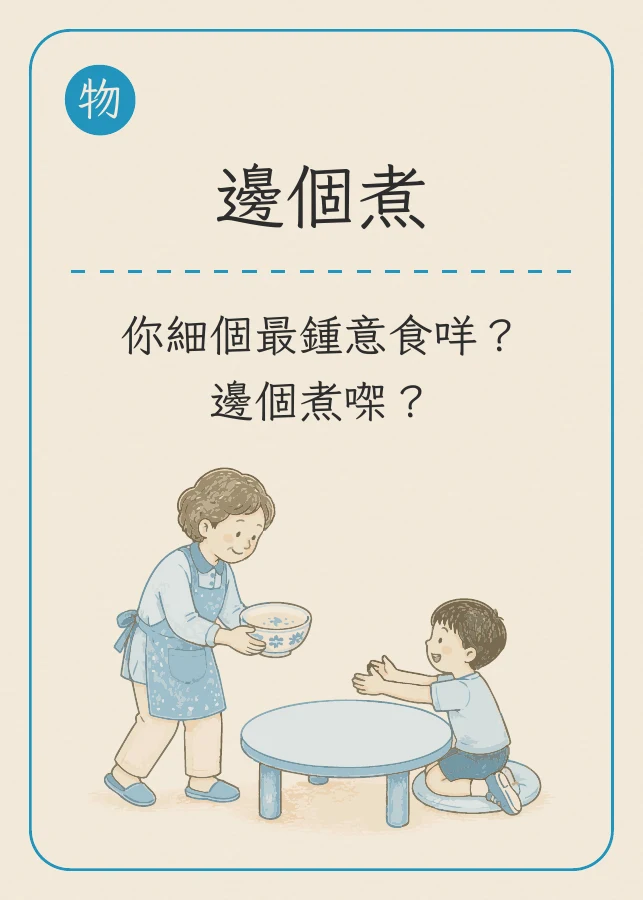
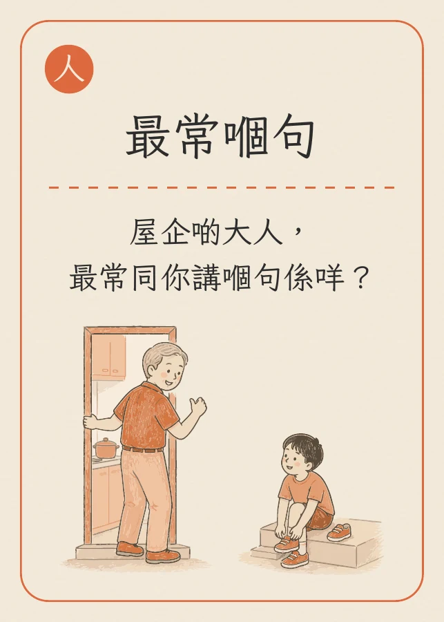
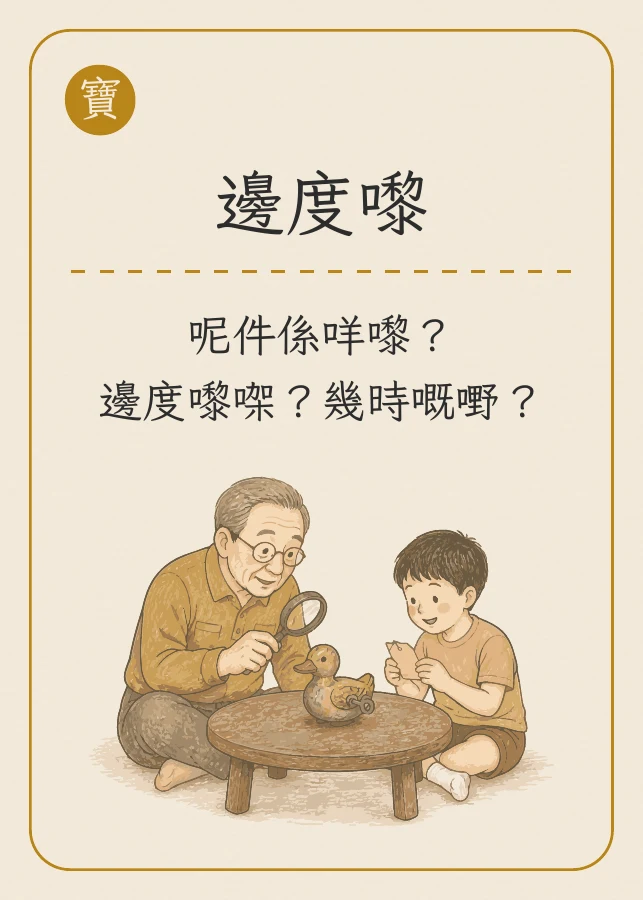

從一張卡，
聊起家人的故事。
有些往事，家人一直記得，我們卻從未問過。
「三代同堂」對話卡，讓一家人從日常小事開始，
慢慢聊到彼此的生活和回憶。
先看看，會聊些甚麼
一張問題，一個開始
物件、人物、往事，都可以是話題。以下是三張實際卡牌。



可以這樣開始
慢慢問，好好聽
不用跟固定次序，也不用每一題都答。選大家願意聊的就好。
- 01
選一張卡，從日常開始
一起揀一張有感覺的卡，或帶一件舊物、一張舊照片，打開話題。
- 02
多問一句，聽見細節
用「想知多啲」接住話題：那時在哪裏？還有誰在場？不用急着問下一題。
- 03
交換記憶，尊重彼此
用「我都係」分享另一代的經歷。想停一停或換話題，隨時說「轉題啦」。
- 04
留下一句，整理成回憶
用「呢句我想記住」選出想保留的片段。先徵得家人同意，再記錄、配上照片，慢慢整理成家庭回憶冊。
把對話延續下去
想了解多一點？
留下你的聯絡方法及想了解的項目，讓我們跟進。
填妥後會為你準備一封查詢電郵。請在電郵程式內核對內容並按「送出」，由傳家寶跟進你的查詢。
電郵已準備好，尚未送出
請開啟電郵，核對內容後按「送出」。如裝置沒有設定電郵程式，可複製內容，再以電郵向傳家寶查詢。